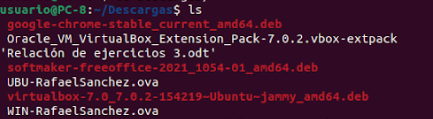
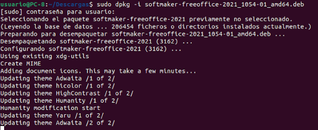

FreeOffice es una suite ofimática bastante completa que consta de softwares de procesamiento de textos, hojas de cálculo y presentaciones. Free Office es totalmente compatible con Microsoft Office y lo tenemos disponible tanto como para Windows y Linux. También está para Mac pero en este caso no veremos la instalación para dicho sistema operativo. Lo mejor de Free Office es que lo tenemos completamente gratuito y podemos usarlo en un ámbito profesional y personal sin tener repercusiones algunas.
Para proceder con la instalación del programa en nuestro sistema operativo Windows o Ubuntu lo primero que necesitamos es nuestro programa de FreeOffice que vamos a instalar, para ello, entraremos en la página web haciendo click sobre FreeOffice que te va a dirigir a la página web de descarga del programa de instalación rápidamente.
Una vez hayamos descargado el programa que vamos a instalar (versión linux en este caso) abriremos una terminal para proceder con la instalación de este.
Una vez se nos haya abierto la terminal, tendremos que ejecutar unos comandos, pero antes debemos asegurarnos en qué carpeta se encuentra el programa que acabamos de descargar. Usualmente se encuentra en Descargas, así que en este caso procederemos empezando desde dicha carpeta.
Para dirigirnos a la carpeta descargas en nuestra terminal linux tendremos que ejecutar un simple y sencillo comando, cd /Descargas hará que nos ponga en ese directorio inmediatamente, una vez estemos allí, ejecutaremos el comando ls para ver todos los archivos y así poder copiar el nombre del archivo que acabamos de descargar el cual nos servirá para el siguiente comando.
Como se puede observar en la foto de arriba, tenemos un archivo que se llama softmaker-freeoffice..., lo que haremos será copiar el nombre completo del archivo con el ratón haciendo click derecho y copiar. Una vez tengamos copiado el nombre del archivo procederemos con el siguiente comando sudo dpkg -i softmaker-freeoffice-2021_1054-01_amd64.deb el cual procederá con la instalación del programa automáticamente.
Una vez hayamos ejecutado dicho comando solo tendremos que esperar a que termine y que nos aparezcan los programas que esta suite ofimática contiene.